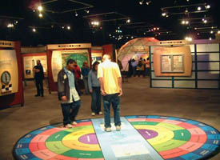

Genetics


Genetics: This 6,000 sq.ft. traveling exhibit ion includes a variety of hands on exhibits about the basics of life.
 Genetics1: An overview of the Genetics exhibit.
Genetics1: An overview of the Genetics exhibit.
 Genetics2: Photos of the exhibit elements.
Genetics2: Photos of the exhibit elements.
Genetics3 More exhibit elements.
Return to PSC Photos Menu
Copyright David Taylor 2004